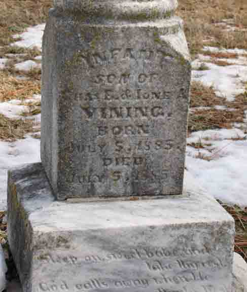

Census Data
| 1900 | 1910 | 1920 | 1930 | 1940 | |
| Charles E. Vining | 41 | 52 | 60 | ? | ? |
| Ione Augusta (Singer) Vining | 32 | 42 | 49 | ? | ? |
| [son] Vining | dead | ||||
| Margaret R. Vining | 12 | [living? in separate household] | |||
| Catherine E. Vining | 11 | 22 | [living? in separate household] | ||
| [child] Vining | ? | dead | |||
| Charles [T.?] Vining | 8 | [living? in separate household] | |||
| Louis D. Vining | 5 | 15 | married and living in separate household | ||
| Thomas C. Vining | living in separate household | ||||
| James John Vining | 3 | 14 | 23 | ? | ? |
| Leonard Vining | 6 | 16 | ? | ? |


Death Data
Gravestone for infant son of Charles E. Vining and Ione Augusta (Singer) Vining, in Girard Cemetery, Girard, Crawford County, Kansas (from Find A Grave):